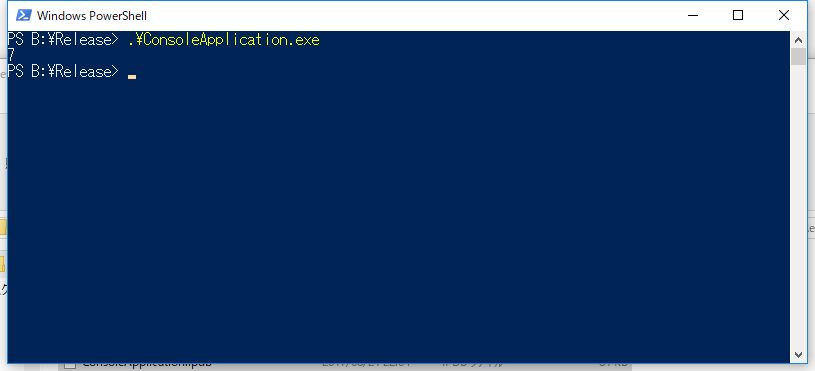
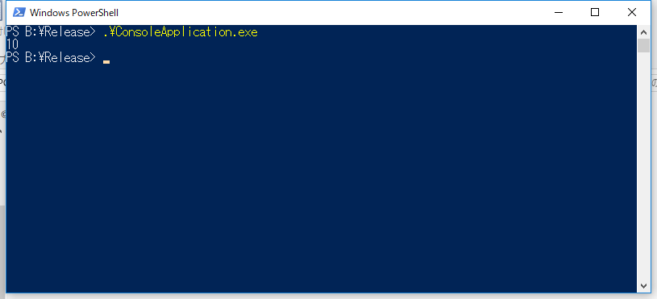

Problem
Pythonはグルー言語、として有名ですが、C#から呼び出す、というか**.NET Framework上で動作するPythonの実装であるIronPython**はもう期待できる状態ではありません。
ですが、Pythonで書かれたプログラムは豊富で、既存のプログラムから呼び出せるようにすると非常に便利なので、C/C++から呼び出す手法を習得してみます。 Visual Studioを想定しています。
Preparation
Python
PythonMod.py [code lang=”python”] def add(x, y): return x + y [/code] 足し算を行う関数です。
C++
ConsoleApplication.cpp [code lang=”cpp”] // ConsoleApplication.cpp : コンソール アプリケーションのエントリ ポイントを定義します。 //
#include “stdafx.h” #define BOOST_PYTHON_STATIC_LIB
#include
const char* scriptFileName = “PythonMod.py”; const char* scriptAddFunc = “add”;
int main() { Py_Initialize();
boost::python::object modle = boost::python::import(“__main__“); boost::python::object attr = modle.attr(“__dict__“);
boost::python::exec_file(scriptFileName, attr, attr);
boost::python::object pythonFun = attr[scriptAddFunc];
boost::python::object v = pythonFun(2, 5);
std::cout << boost::python::extract
Functions
使用している関数の説明です。
Py_Initialize
Python インタプリタを初期化。Python の埋め込みを行うアプリケーションでは、一番最初にこの関数を呼ぶ必要がある。
boost::python::import
指定した名前のモジュールをインポートします。 また、attr関数は指定した名前の属性を取得します。 __dictは特殊な属性で、クラスに対して使用した場合は、クラスに属するクラス変数やメソッドのオブジェクトが保存されており、クラスのインスタンスに対して使用した場合は、インスタンス変数の辞書が保存されている。 このあたりはお約束的なコードになる。
boost::python::exec_file
指定したファイル名のPythonスクリプトを実行します。 ただ、実行するといっても、この時点では何か実行されるわけではないです。 似た関数として、boost::python::execもあるが、こちらはPythonスクリプトの中身の文字列そのものを読み込む。 意味的には、第2引数、第3引数に指定した変数にデータを読み込んでいる感じ。
attr[scriptAddFunc]
先の説明にあったように、__dict属性は、メソッドや変数を保持している特殊な属性である。 そのため、exec_fileで読み込んだ後は、メソッドなどを名前で検索できるようになっている。 先に示したPythonスクリプト内のaddメソッドをオブジェクトとして取得しています。
boost::python::object v = pythonFun(2, 5);
オブジェクトとして取得したaddメソッドに引数を与えて実行しています。
boost::python::extract>(v)
実行したaddメソッドの戻りを適切な型に変換しています。
VC++ Project Setting
VC++のプロジェクトの設定として
Include Directory
- C:\Program Files\Miniconda2\pkgs\python-2.7.13-0\include Minicondaをインストールしている場合はここだが、環境依存。
- <boost_dir> boostのインストールディレクトリ。このディレクトリからboost/python.hppが参照できる
Additional Library Directory
- C:\Program Files\Miniconda2\pkgs\python-2.7.13-0\libs Minicondaをインストールしている場合はここだが、環境依存。
- <boost_dir>\lib64-msvc-14.0 インストールしているboostのバージョンに依存。
Additional Library
- python27.lib
- boostのlib ソース側でBOOST_PYTHON_STATIC_LIBを指定しているため指定不要。boostを静的にリンクすることになる。
Try
特に考えず、普通にビルドして実行するだけです。 注意するのは、Pythonスクリプトを実行ファイルと同一ディレクトリに配置することくらいです。 2+5の結果が正しく表示されています。

{kind=link}
PythonMod.pyのaddメソッドを積算に変更した場合。

C++側の修正なしで挙動の変更が可能です。 このあたりはIronPythonと同じです。
{kind=link}